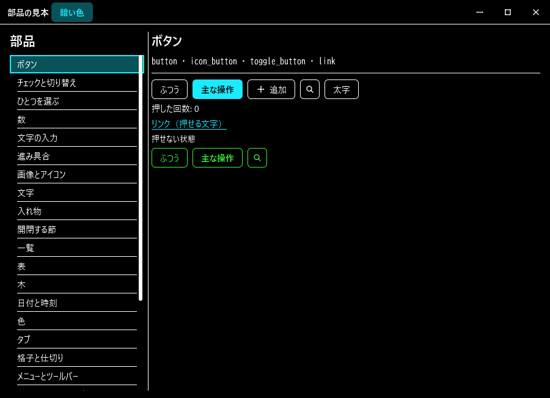
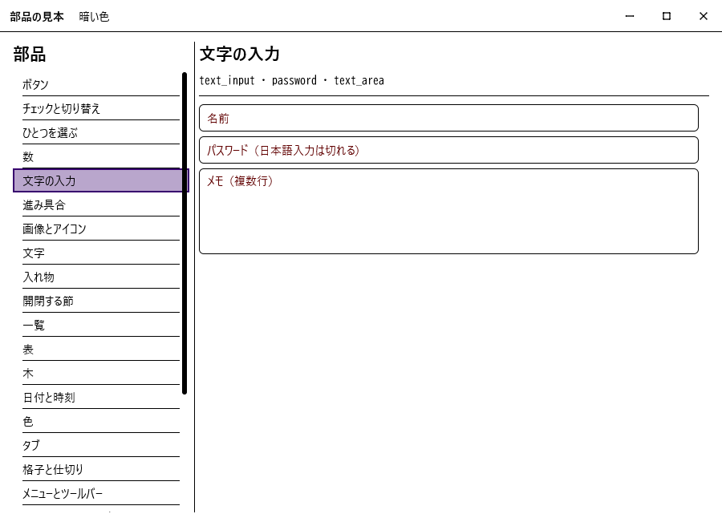
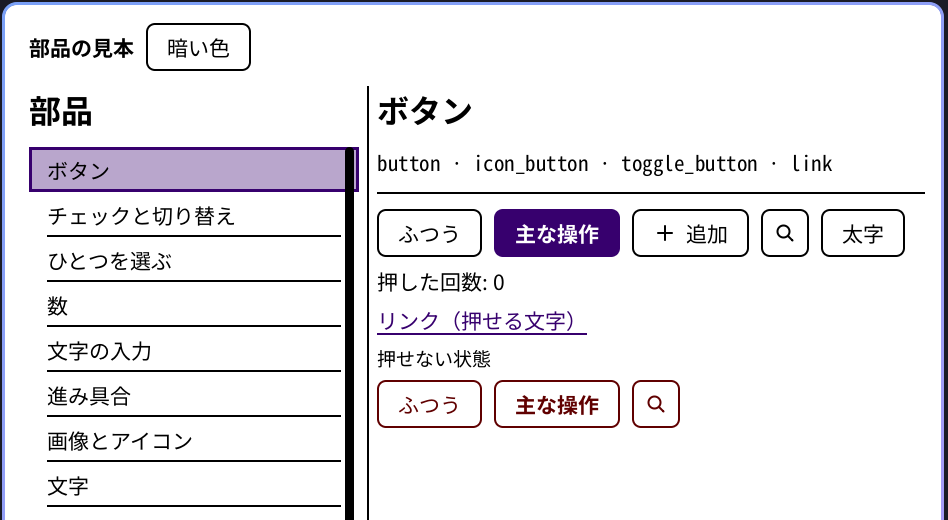

kargui 開発レポート ・ 第 18 章
ハイコントラスト
アプリの仕組みの 4 つ目として、ハイコントラストを作りました。OS がハイコントラストの時、kargui は部品を高い対比の配色で描きます。Windows ではコントラスト テーマの色をそのまま使い、Linux では明暗に合わせた kargui の配色を使います。この章は、作者が寝ている間に作りました。範囲を決めた理由、OS の色を kargui の配色へ写す方法、強制した見本の写真で見つけた 3 つの不具合を紹介します。後半では、作者の手の確かめが 1 回目に動かなかった理由も書きます。
この章で分かること
- OS のハイコントラストに、どこまで従うかの決め方
- OS の 8 色を、kargui の配色の 14 の欄へ写す方法
- ハイコントラストで描き方を変える所（影・選んだ文字・押せない部品）
- 配色の試験が全部通っていても、写真で見つかる不具合
- 手の確かめの手順を「Run」ボタンで動かす時の落とし穴
範囲を決めた
通知と README の写真を送った後、作者は「そろそろ寝るので、ここからは自動で進めて」と言いました。そこで、範囲は私（Claude）が推奨の形で決め、理由を朝の報告に書く約束にしました。GitHub へ送るのは、朝に作者が「送って」と言った後です。
| 項目 | 決めたこと | 理由 |
|---|---|---|
| OS の設定 | 従う。アプリは強制することも、切ることもできる | 利用者が OS で選んだ設定を、アプリごとに選び直さずに済む |
| Windows の色 | コントラスト テーマの色をそのまま使う | 利用者は、テーマの色（黒地に水色、白地に紫など）まで選んでいる |
| Linux の色 | 明暗に合わせた kargui の配色を使う | ポータルは「高いかどうか」だけを返し、色を返さない |
| 配色の欄 | 増やさない | 配色を自分で組み立てているアプリが、書き直さずに済む |
| 確かめ方 | 作者の PC の設定は変えず、kargui の中で強制して撮る | 寝ている作者の画面の設定を、無断で変えない |
書き方
何も書かなければ、OS の設定に従います。アプリが決めたい時は Options::high_contrast を使います。
let mut options = Options::new("Notes");
// None（既定）は OS に従う。Some(true) はいつもハイコントラスト、Some(false) は使わない
options.high_contrast = Some(true);ui.high_contrast()で、今ハイコントラストで描いているかが分かる。canvasで自分で絵を描く時は、これを見てui.theme()の色だけで描く。Theme::high_contrast_dark()とTheme::high_contrast_light()は、Windows の古典の High Contrast Black と White の色。Linux と、アプリが強制した時に使う。- 試験台では、
h.set_high_contrast(true)で OS のハイコントラストを入れたことにする。
配色の写し方
Windows のコントラスト テーマは、GetSysColor で 8 つの色を返します。kargui の配色には 14 の欄があるので、次のように写しました。
| kargui の欄 | OS の色 | ねらい |
|---|---|---|
| 背景・入力欄 | Window | 地の色 |
| 文字・薄い文字・区切り | WindowText | 薄い文字を作らない |
| 押せない文字 | GrayText | 押せないことを色で分ける |
| 縁 | ButtonText | 部品の境を見せる |
| 強調・選んだ文字の背景 | Highlight | 主なボタンと選んだ所 |
| 強調の上の文字 | HighlightText | 強調の上でも読める |
| ボタン | ButtonFace | ボタンの地 |
| 乗った・押した・選んだ時 | ButtonFace に Highlight を 25%・40%・35% 混ぜる | 状態の違いを出しつつ、文字が読める濃さにする |
ふつうの配色では、ヒントや数のような重要でない文字を薄い色で描きます。ハイコントラストでは、文字の濃さで重要さを分けません。薄い文字も WindowText にしました。文字と背景・ボタン・入力欄の対比は 7 : 1 以上（WCAG の AAA の目安）、押した時や選んだ時の背景の上でも 4.5 : 1 以上になることを、試験で確かめています。下のグラフの「高対比」は、ハイコントラストの配色のことです。
描き方を変えた所
色を入れ替えるだけでは足りない所があります。ハイコントラストの間は、次の所の描き方を変えます。
- 影と半透明の塗りを描かない。薄い黒の影は、配色に無い色になるため。部品の境は縁で見せる。
- 一覧やメニューの選んだ行に、強調の色の縁を 2 画素付ける。背景の色だけでは見分けにくいため。
- 選んだ文字は、強調の上の文字の色で描き直す（下で説明）。
- 題の帯の閉じるボタンは、赤の代わりに強調の色で塗る。
- 押せない部品とヒントは、GrayText で描く。
- スクロールバーのつまみは透かさない。透かすと、配色に無い灰色になるため。


選んだ文字を描き直す
入力欄の文字は、1 回の配置でまとめて描きます。選んだ範囲の中だけ色を変えるのは、配置を分けないとできません。そこで、全体をふつうの文字の色で描いた後、選んだ範囲の四角に切り抜きをかけ、同じ配置をもう一度、強調の上の文字の色で描きます。複数行の欄では、選んだ範囲の行ごとの四角で切り抜きます。明るい方では、紫の上に黒の文字が乗らず、白の文字になります。
OS ごとの違い
| 項目 | Windows | Linux |
|---|---|---|
| 設定を読む | SystemParametersInfoW の SPI_GETHIGHCONTRAST | ポータルの contrast（1 が高い） |
| 色 | GetSysColor の 8 色 | 無し（kargui の配色） |
| 切り替えた時 | 設定や色が変わった知らせで読み直す | 起動の時だけ読む（明暗と同じ） |
| 記録 | theme.contrast | portal.contrast と theme.contrast |
Windows の設定は HIGHCONTRASTW という構造体で返ります。windows クレートでは、この構造体を使うのに別の機能の切り替え（Win32_UI_Accessibility）が要ります。3 つの欄だけなので、同じ並びの構造体を自分で書きました。GetSysColor の色は 0x00BBGGRR の順に並ぶので、赤と青を入れ替えて読みます。別の窓を開いた時は、主の窓の設定を引き継ぎます。
写真で見つけた 3 つの不具合
共通の部分と描き方を作り、試験 317 個が通った後に、見本をハイコントラストで強制して撮りました（6 ページを明暗で 12 枚）。写真を見ると、試験では分からなかった不具合が 3 つありました。
| 見えたこと | 原因 | 直し方 |
|---|---|---|
| 押せない主のボタンが、押せるボタンより目立つ | 押せない主のボタンを縁の色で塗っていた。ハイコントラストの縁は白（明るい方では黒）なので、一番強い色になった | 押せない部品を描く間だけ、縁・文字・強調をどれも GrayText にした配色に差し替える |
| 入力欄のヒントが、入力済みに見える | ヒントを薄い文字の色で描いていた。ハイコントラストでは薄い文字も WindowText | WinUI と同じく、GrayText で描く |
| スクロールバーのつまみが灰色 | 文字の色を 45% の濃さで描いていた | 不透明の文字の色で描き、乗った時と引っ張る時は強調の色 |
1 つ目は、部品ごとに直すと直し漏れが出ます。押せない部品は、ボタン・入力欄・チェック・ドロップダウンなど、たくさんあるからです。部品を描く関数の入口で、押せない部品を描く間だけ配色を差し替える形にしました。押せない部品の中は、どの部品でも GrayText で描かれます。
配色の試験は、文字と背景の組み合わせがどれも読める濃さかを確かめていて、全部通っていました。それでも、押せないボタンに強い色を使うという「使い方の誤り」は、写真で見るまで分かりませんでした。見つけた 2 つ（押せないボタンとヒント）は、先に画素の色を数える試験を書き、直す前に落ちることを確かめてから直しました。
検証機で確かめた
検証機（Hyprland）では、ポータルの係は GNOME の設定 org.gnome.desktop.a11y.interface の high-contrast を読みます。この設定を一時的に入れるとポータルは 1 を返し、見本はハイコントラストで開きました。確かめた後、設定は元（false）に戻しています。

検証機では、試験が 1 つ落ちました。選んだ文字を白で描き直したかを、真っ白の画素の数（20 より多い）で確かめる試験です。Linux の書体は線が細く、真っ白の画素は 19 個でした。直す前は 0 個なので、描き直しは働いています。基準を「どの色も 0xc0 以上の、白に近い画素」に直し、Windows と Linux の両方で通るようにしました。
作者の手の確かめ
朝、作者に 7 つの手順を渡しました。1 回目は、見本が 1 度も開きませんでした。作者の「試しました」の後に記録を読むと、新しい行がありません。アプリの端末の画面を読むと、次の誤りが 3 回出ていました。
error: could not find `Cargo.toml` in `D:\soft\dekiru-html\.claude\worktrees\…` or any parent directory手順の文には「kargui のフォルダで」と書きましたが、命令そのものには場所が入っていませんでした。アプリの「Run」ボタンは、この会話の作業場所で命令を打つので、cargo が kargui を見つけられなかったのです。命令に --manifest-path D:\soft\kargui\Cargo.toml を付けて渡し直しました。
| 手順 | 記録 |
|---|---|
| 暗い方で開く | theme.contrast は forced=Some(true)。入力欄に 3 文字打って Ctrl+A を押した |
| 明るい方で開く | 42 回押し、そのうち 29 回は左の一覧でページを行き来した |
| 異常の数 | panic 0、窓の処理の二重の呼び出し 0、誤り 0 |
手順を文で書くと、場所の指定が命令に届きません。作業場所の外のものを動かす命令は、場所を命令の中に入れます（cargo なら --manifest-path）。また、作者が「試しました」と言ったのに記録に新しい行が無い時は、アプリが動かなかった可能性が高いので、推測で進めず端末の画面を読みます。
アプリを開いたまま OS のコントラスト テーマを切り替える手順は、任意にしていて、まだ試していません。
数
ハイコントラストで足した試験は 10 個です（試験台 5、配色 4、見本の引数 1）。公開の項目の説明は 630 から 633 に、動く例は 445 から 447 に増えました。説明の中の動く例（doc テスト）は 727 から 735 に増えました。記録 b506313 は 17 のファイルを変え、669 行を足して 27 行を消しています。
CI
記録 b506313 は、次の章の記録 52c6636 と一緒に、作者の「送って」で GitHub に入りました。CI は Windows・Linux・macOS で 1 回目から通りました。送る前に、CI の Windows と同じ 4 段と clippy を手元で走らせ、検証機でも試験と clippy を走らせています。その前の記録（README の写真）では、GitHub の macOS の実行機が空かずに 15 分で取り消されましたが、今回は 3 つとも走りました。
次の段階
アプリの仕組みの次は、多言語です。作者には、kargui が自分で出す約 30 語（題の帯のボタン、ドッキングのメニューなど）を英語と日本語の表にまとめ、OS の表示の言語で選ぶ案を出しています。ハイコントラストでは、Linux で設定を切り替えた時にすぐ描き直すことと、リンクの色（HotLight）を使うことを、まだ作っていません。